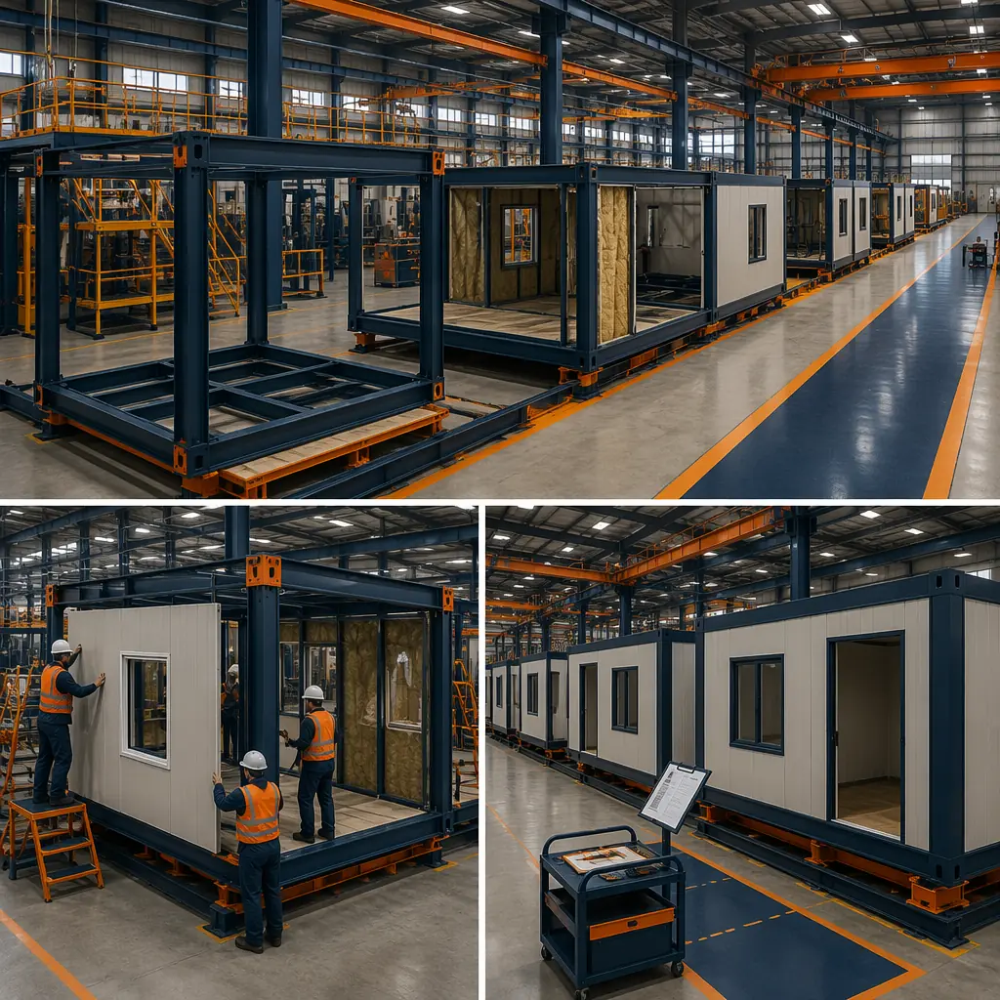
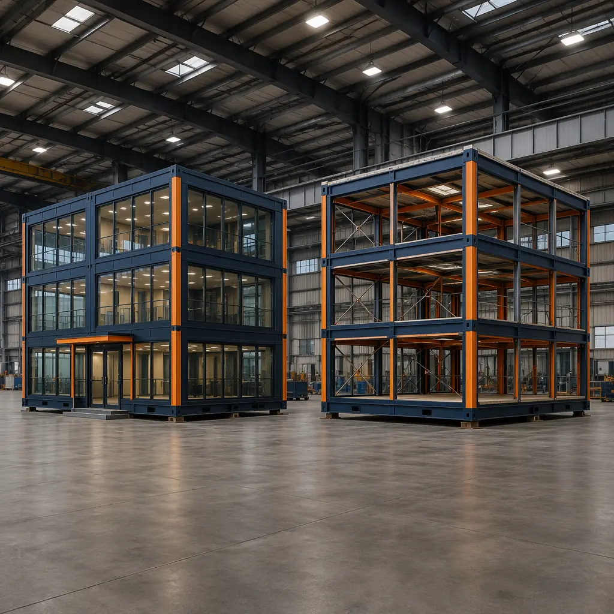
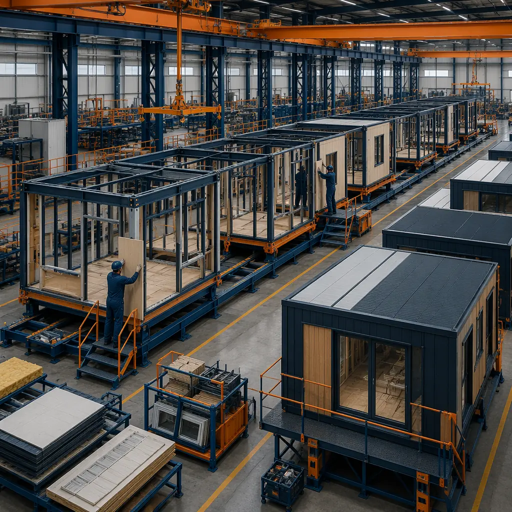
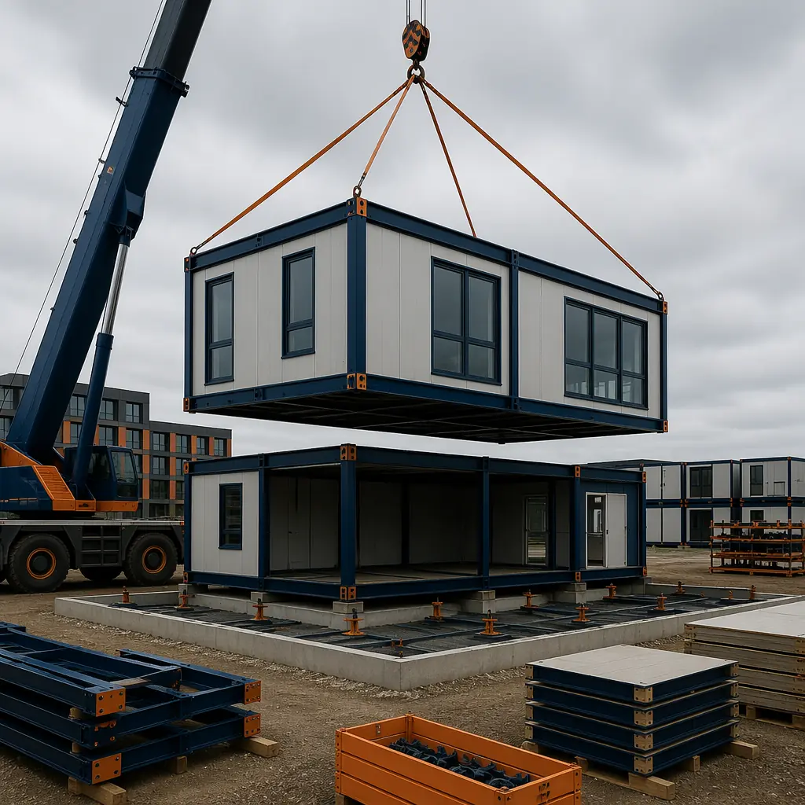
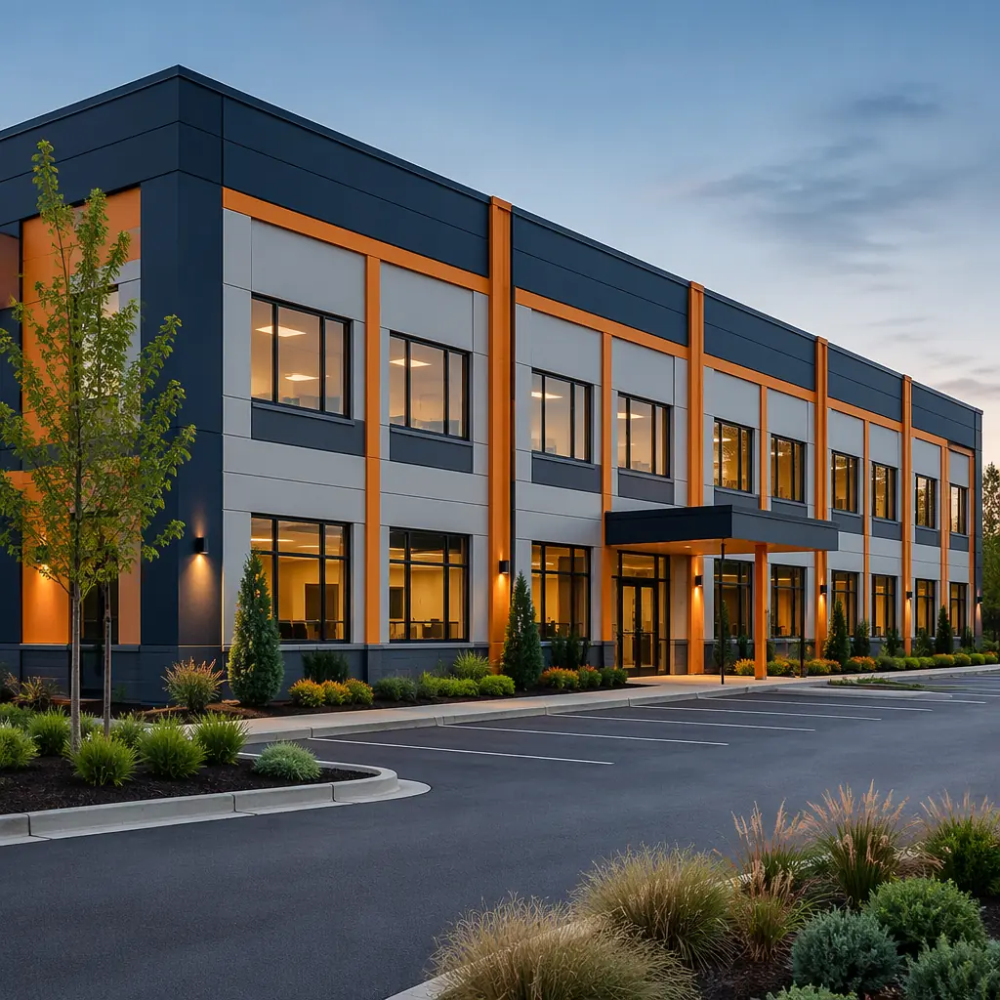

The decision to lease or buy a modular building is not a construction decision — it is a capital allocation decision disguised as a procurement question. For a 20,000 sq ft commercial building with a delivered cost of $2.8–3.6 million, the lease-versus-buy analysis can swing the net present value of the project by $400,000–$800,000 over a 10-year horizon, depending on the discount rate, tax position, and residual value assumptions. Yet most developers and facility managers default to their habitual financing structure without running the numbers. This article provides the framework to evaluate both paths — operating lease, capital lease, and outright purchase — with the specific parameters that apply to modular prefabricated construction, where shorter delivery timelines and predictable factory pricing change the assumptions that drive traditional real estate financing models.

The Three Financing Paths — Operating Lease, Capital Lease, and Cash Purchase
Before comparing costs, it is essential to understand what each structure actually means for the balance sheet, the income statement, and the organization's operational flexibility. The three paths represent fundamentally different relationships with the asset:
- Operating lease (true lease). The lessor retains ownership of the building; the lessee pays monthly rent for the right to occupy and use the asset. Under ASC 842 (US GAAP) and IFRS 16, most operating leases now appear on the balance sheet as a right-of-use asset with a corresponding lease liability, eliminating the historical off-balance-sheet advantage. However, operating leases preserve two real benefits: the lessor bears residual value risk, and lease payments are fully deductible as operating expenses in the year incurred. For a modular building with a 30–50 year structural life, the residual value after a 5–10 year lease is substantial — and under an operating lease, that value belongs to the lessor, not the lessee.
- Capital lease (finance lease / lease-to-own). The lessee treats the building as an owned asset for accounting purposes, depreciating it over its useful life and recognizing interest expense on the lease obligation. At the end of the lease term, the lessee typically has a bargain purchase option — often $1 or a nominal amount — that transfers ownership. Capital leases combine the payment structure of a lease with the economic substance of a purchase, and they are the most common structure for modular buildings that the occupant intends to keep long-term. The key advantage over an outright purchase is that the lessor provides the upfront capital; the lessee preserves cash and credit line capacity for other investments.
- Cash purchase / conventional mortgage. The buyer owns the building outright (or with a mortgage), depreciates it under MACRS or local tax rules, and retains the full residual value. For modular buildings, the purchase price is typically 20–30% lower than site-built equivalents, as analyzed in our cost per square foot guide. The lower purchase price reduces the principal amount that must be financed, which in turn reduces the interest cost — a compounding advantage unique to modular construction.
The critical distinction between these paths for modular buildings is not the monthly payment — it is who captures the residual value and who bears the depreciation risk. Modular buildings, particularly steel-framed commercial structures, depreciate more slowly than traditional wood-framed buildings because of their structural durability and lower maintenance requirements, as documented in our lifecycle cost analysis. This makes ownership more attractive relative to leasing than it would be for a conventional building.

Cash Flow Analysis — Lease vs Buy Over 5, 10, and 20 Years
For a representative 20,000 sq ft modular office building with a delivered cost of $160 per square foot — totaling $3,200,000 including site work, foundation, and module installation — the following table compares the cumulative cash outflow under each structure. The operating lease is priced at a 9% implicit interest rate (typical for single-tenant commercial modular leases), with monthly payments over a 10-year term and a fair market value purchase option. The capital lease uses the same 9% rate with a $1 bargain purchase option. The purchase scenario assumes a 25% down payment ($800,000) and a 6.5% 20-year commercial mortgage on the remaining $2,400,000.
| Scenario | 5-Year Cash Outflow | 10-Year Cash Outflow | 20-Year Cash Outflow | End-of-Term Asset Value |
|---|---|---|---|---|
| Operating Lease (10-yr term) | $1,920,000 | $3,840,000 | $7,680,000* | $0 (lessor retains) |
| Capital Lease (10-yr term, $1 buyout) | $1,920,000 | $3,840,000 | $3,840,000 | ~$1,600,000 (50% residual) |
| Purchase w/ Mortgage | $1,981,000 | $3,162,000 | $3,962,000 | ~$2,400,000 (75% residual) |
*Assumes lease renewal at market rate for years 11–20. All figures in USD, illustrative only. Actual payments depend on credit profile, location, and specifics of the modular building configuration.
The purchase scenario requires more cash upfront — $800,000 for the down payment versus essentially zero for a lease — but by year 10 the cumulative cash outflow is $678,000 lower than either lease structure. More importantly, the purchase scenario leaves the owner with an asset worth an estimated $2.4 million at year 20, while the operating lease leaves nothing. The capital lease splits the difference: same cash outflow as the operating lease through year 10, but ownership transfers at the end of the term, capturing the residual value from year 11 onward.
The modular construction factor tilts this analysis further toward purchase. Because modular buildings deliver 30–50% faster than traditional construction — as demonstrated across our ROI analysis for developers — the building begins generating revenue or operational savings sooner. An office building that opens in 6 months instead of 12 months generates 6 additional months of operational value, which can offset a significant portion of the down payment within the first year. For owner-occupied commercial users, this acceleration is the single largest financial advantage of modular construction — and it applies whether the building is leased or purchased.

Tax Treatment — Depreciation, Section 179, and the Lease Deduction
The tax analysis is where the lease-versus-buy decision becomes organization-specific. The right answer for a tax-exempt entity is different from the right answer for a fully taxable corporation, and the Section 179 and bonus depreciation provisions of the US tax code create timing advantages that can be decisive.
Under an operating lease, the full monthly lease payment is deductible as an operating expense in the year paid — no depreciation schedule, no recapture, no complexity. For a $32,000 monthly lease payment, the annual deduction is $384,000. This is simple and immediate, which is why operating leases remain popular for organizations that value administrative simplicity over long-term asset accumulation.
Under a capital lease or purchase, the building is depreciated over 39 years for commercial property under MACRS (27.5 years for residential rental). However, modular construction opens an important tax planning opportunity that traditional construction does not: because the modules are manufactured off-site and installed as discrete units, a portion of the building — specifically the factory-installed systems, finishes, and equipment — may qualify for shorter recovery periods. As detailed in our tax benefits and depreciation guide, cost segregation studies on modular buildings typically identify 20–30% of the total cost as 5-year or 7-year property (carpeting, appliances, specialized electrical, data cabling) and 10–15% as 15-year land improvements (site utilities, parking, landscaping). The remaining 55–70% is 39-year building property. This cost segregation accelerates depreciation deductions significantly in the first 5–7 years, closing the cash-flow gap between leasing and buying.
Section 179 expensing adds another layer: in 2026, businesses can expense up to $1,220,000 of qualifying property in the year placed in service, subject to a phase-out threshold of $3,050,000. Modular buildings — particularly the equipment and systems components identified in a cost segregation study — frequently qualify for Section 179 treatment. Combined with 60% bonus depreciation (available through 2026 under current law), a modular building purchase can generate first-year depreciation deductions of $600,000–$900,000 on a $3.2 million project, dramatically reducing taxable income in the year of acquisition.
| Tax Attribute | Operating Lease | Capital Lease / Purchase |
|---|---|---|
| Deduction timing | Immediate, each year | Front-loaded (cost seg + bonus depreciation) |
| First-year deduction (on $3.2M building) | ~$192,000 (half-year lease) | $600,000–$900,000 |
| Balance sheet impact | ROU asset + lease liability | Fixed asset + mortgage/lease liability |
| Residual value capture | None (lessor retains) | 100% (owner retains) |
| Depreciation recapture on sale | N/A | Yes (Section 1250 property) |
The most common mistake in modular lease-vs-buy analysis is treating the modular building as a single depreciable asset with a 39-year life. A properly executed cost segregation study transforms the tax profile of the purchase, generating deductions that can make ownership cheaper than leasing on an after-tax basis within 5–7 years — even for organizations that traditionally lease all their real estate.
When Leasing Wins — Scenarios Where the Operating Lease Is the Right Answer
Leasing is not always the suboptimal choice. There are specific scenarios where an operating lease on a modular building produces better economic outcomes than a purchase, and developers should recognize these cases rather than defaulting to ownership:
- Short-horizon occupancy (3–7 years). If the organization expects to outgrow the facility, relocate, or consolidate within 5–7 years, the transaction costs of buying and selling — broker commissions, legal fees, due diligence, and the uncertainty of resale value — can exceed the residual value captured through ownership. Modular buildings, however, have a significant advantage here: the building can be disassembled and relocated to a new site, an option that does not exist for traditional construction. Our guide to design for disassembly covers the technical requirements. If relocation is a realistic possibility, the purchase becomes more attractive even for short-horizon users, because the building moves with the organization rather than being sold into an illiquid market.
- Tax-exempt organizations. Nonprofits, government agencies, and educational institutions that pay no income tax cannot benefit from depreciation deductions. For these entities, the lease deduction is irrelevant and the depreciation advantage of ownership is worthless. The analysis reduces to a pure cash-flow comparison, where leasing often wins because the lessor's cost of capital — including their ability to use the tax benefits that the tax-exempt lessee cannot — is passed through in the form of lower lease payments. This is the classic municipal leasing model, and it applies equally to modular government buildings and modular K-12 schools.
- Balance sheet capacity constraints. Organizations that are near their debt covenant limits, preparing for a credit rating review, or planning a major capital raise may prefer to keep mortgage debt off their balance sheet. An operating lease creates a right-of-use asset and lease liability under ASC 842 — so it no longer disappears from the balance sheet entirely — but the liability is classified as an operating obligation rather than debt in many covenant calculations, preserving borrowing capacity for core business activities.
- Uncertain specifications or rapid growth. A technology company that expects to double headcount in 3 years, or a healthcare provider testing a new service line, may not want to commit to a permanent facility. Modular construction solves part of this problem — buildings can be expanded with additional modules — but if the uncertainty is existential rather than incremental, leasing preserves the option to walk away at the end of the term without the burden of selling a specialized facility.

When Buying Wins — The Modular Advantage Tipping Point
For most owner-occupied commercial users with a horizon of 10 years or longer, purchasing a modular building produces a superior financial outcome. The reasons are specific to modular construction:
First, the 20–30% lower initial cost compared to traditional construction — documented in our cost analysis — means the purchase price is lower, the mortgage principal is lower, and the interest cost over the life of the loan is lower. This is a compounding advantage: every dollar saved on construction cost is a dollar that does not need to be borrowed, and the interest on that dollar is never paid. Over a 20-year mortgage at 6.5%, a $960,000 construction cost saving (30% of $3.2M) translates to approximately $780,000 in avoided interest payments.
Second, modular buildings maintain their value better than traditional buildings of equivalent age. The factory-controlled quality, documented in our QC systems analysis, produces a building with fewer latent defects, more consistent finishes, and better dimensional precision. After 15–20 years, a modular steel-framed building typically requires less deferred maintenance than a site-built equivalent, which supports a higher appraisal value and better refinancing terms.
Third, the development timeline advantage — 6–8 months from contract to occupancy for a modular commercial building versus 12–18 months for traditional construction — generates real economic returns that do not appear in a static NPV analysis. Earlier occupancy means earlier revenue (for income-producing properties) or earlier operational savings (for owner-occupied facilities). The ROI impact of this acceleration often exceeds the tax benefits of either leasing or buying.
The question is not whether leasing or buying is universally better — it is whether the specific organization, at this specific moment in its lifecycle, with this specific building, will capture more value by owning the residual or by paying a premium to transfer that residual value risk to a lessor. Modular construction does not change the framework of that question, but it changes the inputs: lower cost, faster delivery, higher residual value, and better tax allocation. Run the numbers with modular-specific assumptions and the answer often shifts from lease to buy.
Decision Framework — Five Questions to Answer Before You Choose
Bring the following questions to your CFO, your tax advisor, and your modular manufacturer before committing to a financing structure:
- What is the realistic occupancy horizon? Less than 7 years favors leasing. More than 10 years favors buying. Between 7 and 10 years, run the NPV with both assumptions and compare.
- What is the organization's marginal tax rate, and can it use depreciation deductions? If the effective tax rate is above 21% and the organization has taxable income to offset, the depreciation advantage of ownership is worth 15–25% of the purchase price in present value terms. If the organization is tax-exempt or loss-making, this advantage disappears.
- Has a cost segregation study been performed on the modular building? If not, request one — it routinely identifies 30–45% of the building cost as shorter-lived property eligible for accelerated depreciation, which transforms the purchase analysis.
- Does the modular building qualify for Section 179 expensing? For qualifying small and mid-size businesses, the first-year deduction can eliminate the cash-flow advantage that leasing holds in years 1–3.
- What is the modular manufacturer's residual value track record? A manufacturer like MODURA, with 500+ projects across 18 countries and steel-framed buildings with documented maintenance histories, provides the data that supports a higher residual value assumption — which tilts the NPV toward purchase. Ask for a lifecycle cost analysis specific to your building type and location.
